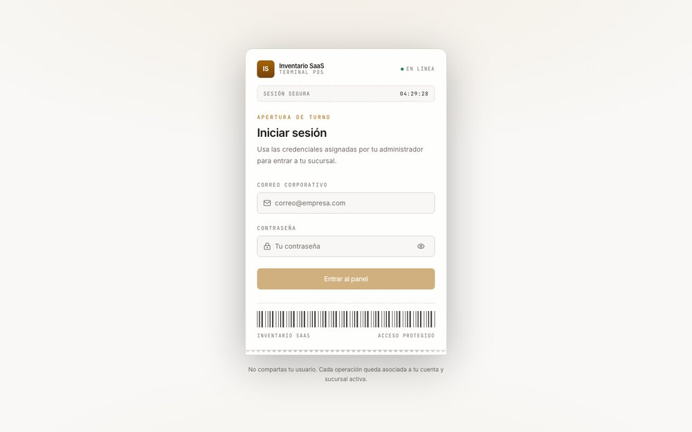
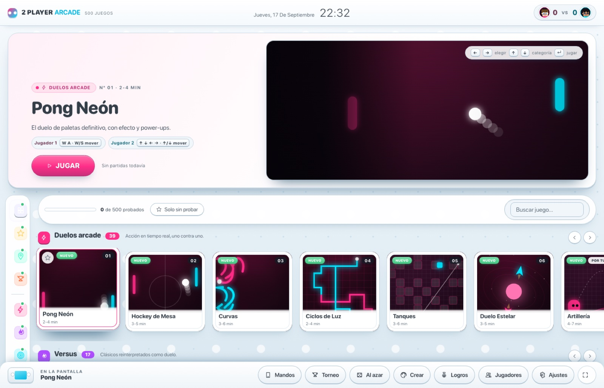
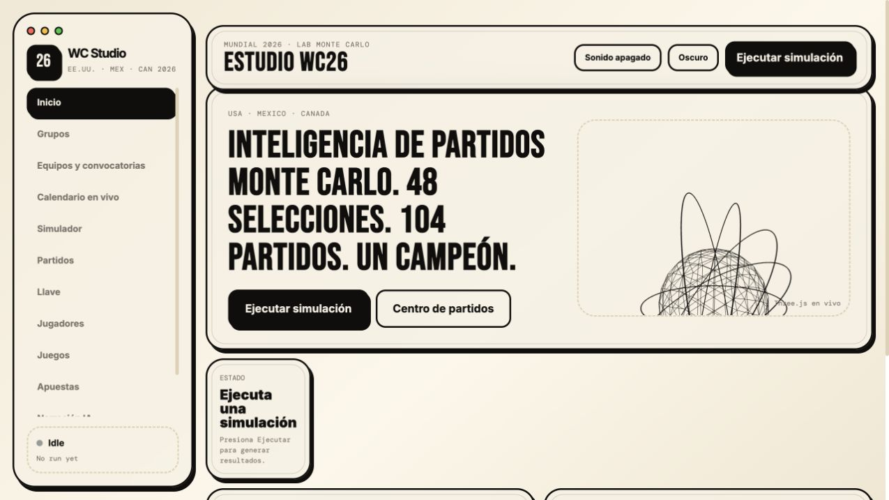
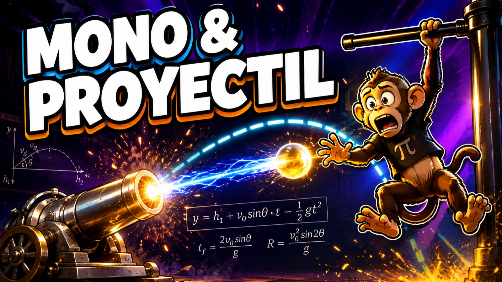
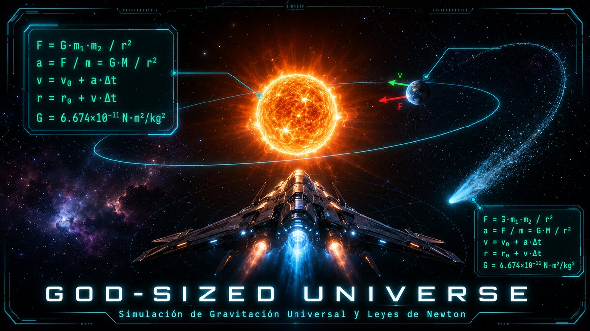
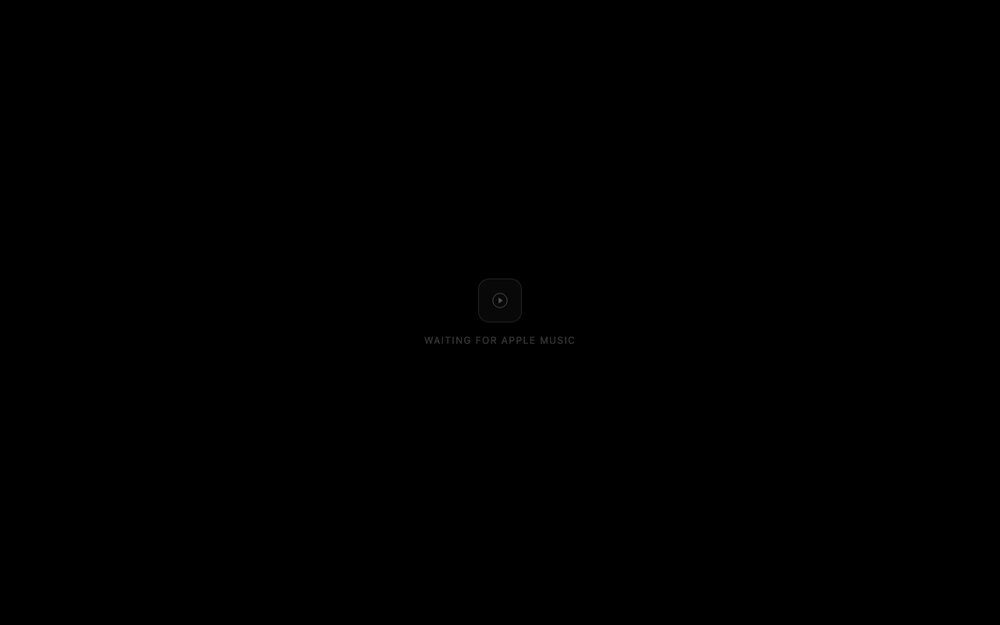

Inventario SaaS
+ cada tenant vive en su propia base de datos — no una columna tenant_id compartida
feat(kisnner): ingeniero de software
Estudiante de Ingeniería en Sistemas de Información Computacionales (UAM, Nicaragua) y freelancer desde 2025. Backend transaccional, apps nativas de macOS/iOS, y contribuciones reales a proyectos open source — incluido el ecosistema de Apple. Multiplataforma por gusto, no solo por trabajo: macOS y Windows, por igual.
cada tarjeta muestra la decisión técnica que más define al proyecto, no una lista genérica de features.

+ cada tenant vive en su propia base de datos — no una columna tenant_id compartida





# UAM Class token en Keychain PIN nunca se persiste multi-cuenta simultánea sin cookies, solo API
# PRELO pedidos de comida en el campus de la UAM cobra el saldo exacto que devuelve el backend
PRs reales a herramientas que uso — verificados contra binarios/tests reales antes de enviarlos.
en orden cronológico, como un historial de versiones.